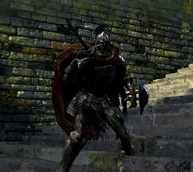

.jpg)
Basilisco
Localizacion: Profundidades, El gran hueco, Lago de la ceniza
Drops: Ojo de la muerte(6% de probavilidad)
Salud: NJ=116-193, NJ+=285-316
Almas: NJ=200-400, NJ+=1000-800
Descripcion
Los Basiliscos son lagartos escuálidos capaces de exhalar una niebla gris que provoca el estado de Maldición.
Estrategia
Los Basiliscos no poseen ataques cuerpo a cuerpo y su salud es más bien poca. Sin embargo, si el jugador se acerca demasiado corre el riesgo de exponerse al gas que causa el estado de Maldición, así que no es aconsejable enfrentar a varios al mismo tiempo. Golpear cualquier parte de la cara de un Basilisco provocará un daño mayor. Debido a esto, los ataques de estoque son muy útiles.
Curiosidades
Los "apéndices" con forma de ojo que aparecen en los Basiliscos no son sus verdaderos ojos. Los pequeños ojos de los Basiliscos son de color amarillo y están ubicados justo sobre sus bocas.

Caballero balder
Localizacion: Parroquia de los no muertos, Fortaleza de sen
Salud: Parroquia de los no muertos=NJ=129(E.Balder), 151(Estoque), NJ+=324(E.Balder), 368(Estoque)
Salud: Fortaleza de sen=NJ=385(E.Balder), 134(Ballesta), NJ+=695(E.Balder), 245(Ballesta)
Almas: Parroquia de los no muertos=NJ=160(E.Balder), 200(Estoque), NJ+=800(E.Balder), 1000(Estoque)
Almas: Fortaleza de sen=NJ=500, NJ+=1500
Descripcion
Hay dos variantes de los Caballeros Balder: los de la Parroquia de los no muertos tienen una capa y los de la cima de la Fortaleza de Sen carecen de ella. Los Balder usan diferentes armas: Estoque Balder, Estoque y Ballesta ligera (sólo en la Fortaleza de Sen). Los que poseen el Estoque son los más fuertes de todos ellos.
Estrategia
Los Caballeros Balder tienen mucha salud por lo que es muy peligroso pelear con varios a la vez. Los ataques a larga distancia son buenos pero son muy rápidos por lo que muchas veces solo te servirá para atraerlos. Los ataques críticos (parry seguido de puñalada y puñalada) son un método eficiente para acabar con estos enemigos.
Drops
Estoque Balder 1%, Estoque 2%, Escudo Balder 1%, Rodela 1%, Ballesta ligera 2%, Yelmo de Balder 1%, Armadura de Balder 1%, Guanteletes de Balder 1%, Polainas de Balder 1%